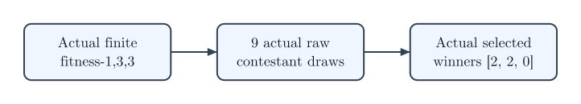
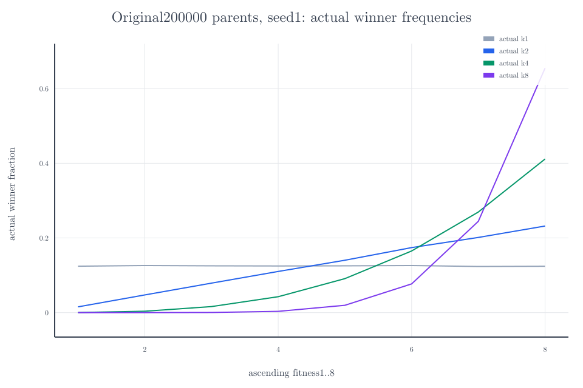
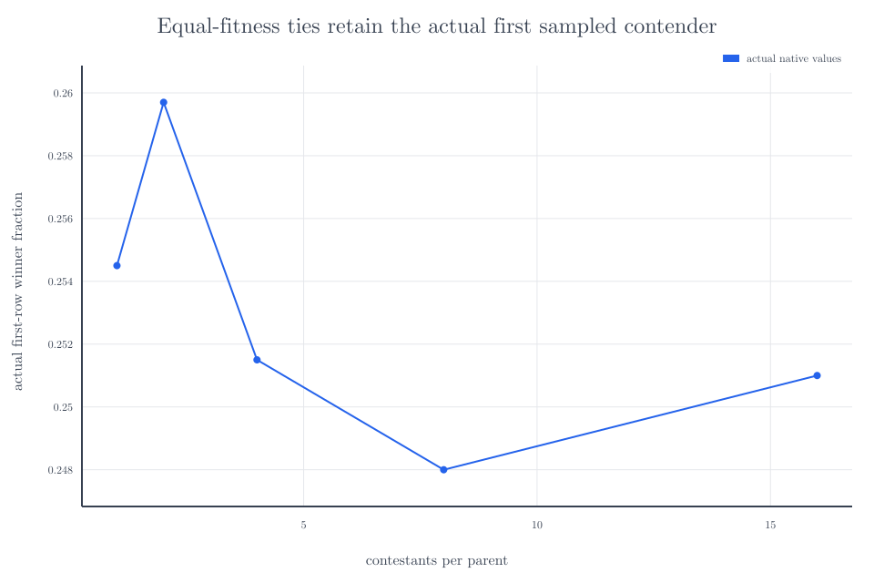
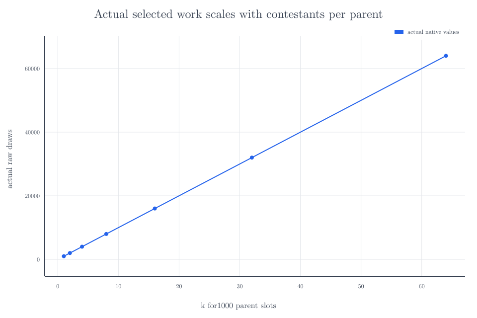

Tournament selection: actual contestant draws and first-tie winners
Abstract
Tournament size changes selection pressure while depending only on fitness ordering. Actual historical raw draws, contender comparisons and winner counts retain the original200000-parent experiment.
Mechanism and mathematical scope
Each parent slot draws k contenders with replacement and keeps the highest finite fitness, retaining the first sampled contender on ties. Under ideal independent uniform population draws and strictly increasing ranks0..m-1, P(winner rank r)=((r+1)/m)k-(r/m)k. The historical finite xorshift stream reduced modulo m has modulo bias; these ideal probabilities are references, not an exact generator certificate. Strictly increasing transformations preserve comparisons; non-strict transformations can introduce ties and need not preserve winners. Negative fitness needs no special normalization.
A tiny actual producing history
The table and native concept diagram read the same producing execution. Every block below is a complete editable C++ program.
#include <dm/dm.hpp>
int main() {
namespace a = dm::algorithms;
namespace g = dm::graphics;
std::filesystem::create_directories("build");
auto r = a::tournament_trace({-1, 3, 3}, 3, 3, 1);
std::print("| actual parent slot | contender | raw word | candidate | best before | best after |\n| " "---: | ---: | ---: | ---: | ---: | ---: |\n");
for (const auto &s : r.steps)
std::print("| {} | {} | {} | {} | {} | {} |\n", s.pick, s.round,
s.raw_word, s.candidate, s.before, s.after);
g::Diagram concept_diagram(48, 1100);
concept_diagram.node("n0", {0, 0}, "Actual finite fitness-1,3,3");
concept_diagram.node("n1", {5, 0},
std::format("{} actual raw contestant draws",
r.random_words));
concept_diagram.node("n2", {10, 0},
std::format("Actual selected winners {}", r.indices));
concept_diagram.edge("n0", "n1").edge("n1", "n2");
concept_diagram.save_svg("build/tournament_selection_tiny.svg");
}| actual parent slot | contender | raw word | candidate | best before | best after |
|---|---|---|---|---|---|
| 0 | 0 | 1082269761 | 0 | 0 | 0 |
| 0 | 1 | 1152992998833853505 | 2 | 0 | 2 |
| 0 | 2 | 11177516664432764457 | 0 | 2 | 2 |
| 1 | 0 | 17678023832001937445 | 2 | 2 | 2 |
| 1 | 1 | 9659130143999365733 | 2 | 2 | 2 |
| 1 | 2 | 17775799001133815809 | 1 | 2 | 2 |
| 2 | 0 | 11693034620340510321 | 0 | 0 | 0 |
| 2 | 1 | 14279964170112293133 | 0 | 0 | 0 |
| 2 | 2 | 9024654201992055039 | 0 | 0 | 0 |

The retained original experiment
#include <dm/dm.hpp>
int main() {
namespace a = dm::algorithms;
namespace g = dm::graphics;
std::filesystem::create_directories("build");
const std::vector<double> fitness{1, 2, 3, 4, 5, 6, 7, 8};
constexpr int N = 200000;
std::vector<double> x;
for (int i = 0; i < 8; ++i)
x.push_back(i + 1);
auto chart = g::RPlot::create();
const std::array<int, 4> sizes{1, 2, 4, 8};
const std::array<g::RGB, 4> colors{{{148, 163, 184}, {37, 99, 235},
{5, 150, 105}, {124, 58, 237}}};
std::print("| original k | actual best count /200000 | empirical best fraction | ideal uniform best " "probability | actual draws |\n| ---: | ---: | ---: | ---: | ---: |\n");
for (std::size_t j = 0; j < sizes.size(); ++j) {
auto r = a::tournament_run(fitness, N, sizes[j], 1);
std::vector<double> prob;
for (auto count : r.counts)
prob.push_back(double(count) / N);
chart.lines(x, prob, std::format("actual k{}", sizes[j]), colors[j]);
std::print("| {} | {} | {:.9g} | {:.9g} | {} |\n", sizes[j],
r.counts.back(), prob.back(), 1 - std::pow(7. / 8, sizes[j]),
r.random_words);
}
chart.title("Original200000 parents, seed1: actual winner frequencies").x_label("ascending fitness1..8").y_label("actual winner fraction");
chart.save_svg("build/tournament_selection_original.svg");
}| original k | actual best count /200000 | empirical best fraction | ideal uniform best probability | actual draws |
|---|---|---|---|---|
| 1 | 24834 | 0.12417 | 0.125 | 200000 |
| 2 | 46397 | 0.231985 | 0.234375 | 400000 |
| 4 | 82297 | 0.411485 | 0.413818359 | 800000 |
| 8 | 130992 | 0.65496 | 0.656391084 | 1600000 |

Explicit controls
#include <dm/dm.hpp>
int main() {
namespace a = dm::algorithms;
namespace g = dm::graphics;
std::filesystem::create_directories("build");
std::vector<double> x, y;
std::print("| k | actual first-row winners under equal fitness | actual final-row winners | selected " "comparisons |\n| ---: | ---: | ---: | ---: |\n");
for (int k : {1, 2, 4, 8, 16}) {
auto r = a::tournament_run({2, 2, 2, 2}, 10000, k, 1);
x.push_back(k);
y.push_back(double(r.counts[0]) / 10000);
std::print("| {} | {} | {} | {} |\n", k, r.counts[0], r.counts.back(),
r.comparisons);
}
auto plot = g::RPlot::create();
plot.lines(x, y, "actual native values", {37, 99, 235}).points(
x, y, {37, 99, 235}, 4).title("Equal-fitness ties retain the actual first sampled contender").x_label("contestants per parent").y_label("actual first-row winner fraction");
plot.save_svg("build/tournament_selection_controls.svg");
}| k | actual first-row winners under equal fitness | actual final-row winners | selected comparisons |
|---|---|---|---|
| 1 | 2545 | 2477 | 0 |
| 2 | 2597 | 2441 | 10000 |
| 4 | 2515 | 2439 | 30000 |
| 8 | 2480 | 2475 | 70000 |
| 16 | 2510 | 2436 | 150000 |

Actual selected work and sensitivity
#include <dm/dm.hpp>
int main() {
namespace a = dm::algorithms;
namespace g = dm::graphics;
std::filesystem::create_directories("build");
std::vector<double> x, y;
std::print("| k | actual draws | actual strict comparisons |\n| ---: | ---: | ---: |\n");
for (int k : {1, 2, 4, 8, 16, 32, 64}) {
auto r = a::tournament_run({1, 2, 3, 4, 5, 6, 7, 8}, 1000, k, 1);
x.push_back(k);
y.push_back(r.random_words);
std::print("| {} | {} | {} |\n", k, r.random_words, r.comparisons);
}
auto plot = g::RPlot::create();
plot.lines(x, y, "actual native values", {37, 99, 235}).points(
x, y, {37, 99, 235}, 4).title("Actual selected work scales with contestants per parent").x_label("k for1000 parent slots").y_label("actual raw draws");
plot.save_svg("build/tournament_selection_work.svg");
}| k | actual draws | actual strict comparisons |
|---|---|---|
| 1 | 1000 | 0 |
| 2 | 2000 | 1000 |
| 4 | 4000 | 3000 |
| 8 | 8000 | 7000 |
| 16 | 16000 | 15000 |
| 32 | 32000 | 31000 |
| 64 | 64000 | 63000 |

API and interpretation
Finite fitness, nonnegative picks and strictly positive k are validated completely. Zero picks consumes no random word and permits empty fitness; positive picks require a population. Complete n*k is checked before sampling. The same historical RNG and modulo mapping preserve valid legacy winner streams; no unbiased-bounded-RNG claim is made.
Reusable producers, fixtures and histories live in the canonical C++ library. Captured records own their values and do not come from a separate report replay. Selected counters and record/scalar policies are specified at their API boundaries; they are not peak-byte or wall-time budgets. Synthetic structural inputs are controlled fixtures for these mechanisms.
References
- Tournament rank CDF and winner probabilities, derived explicitly above
Verified in the shared ten-document batch: 70 scoped native cases;20 directly
instrumented ASan/UBSan cases;75 executable public examples;387/387 definitions
across25 full scopes;10 hovers;9766 independent records/134784 checks;frozen
valid-input comparisons across all ten families;13 checkout/installed standalone
headers and linked ten-family consumer;40 executed programs and40 inspected
figures with both exports. Receipts: build/mepml-conversion/batch-394-403/.